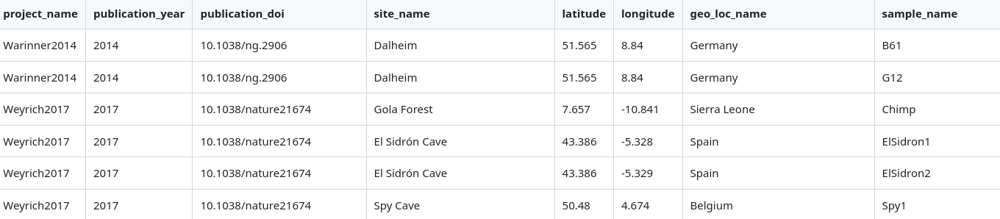
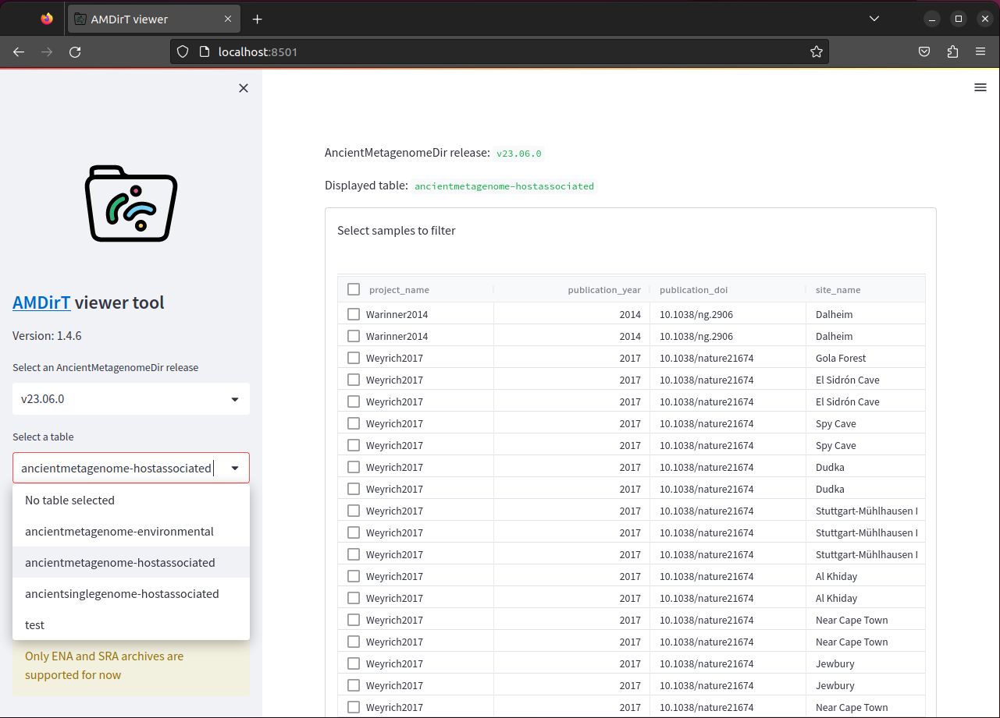
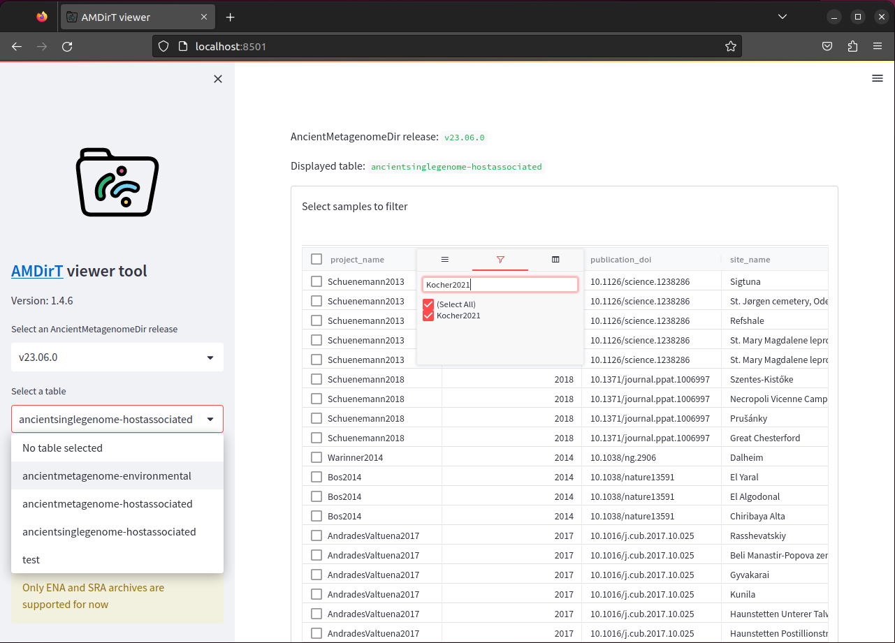
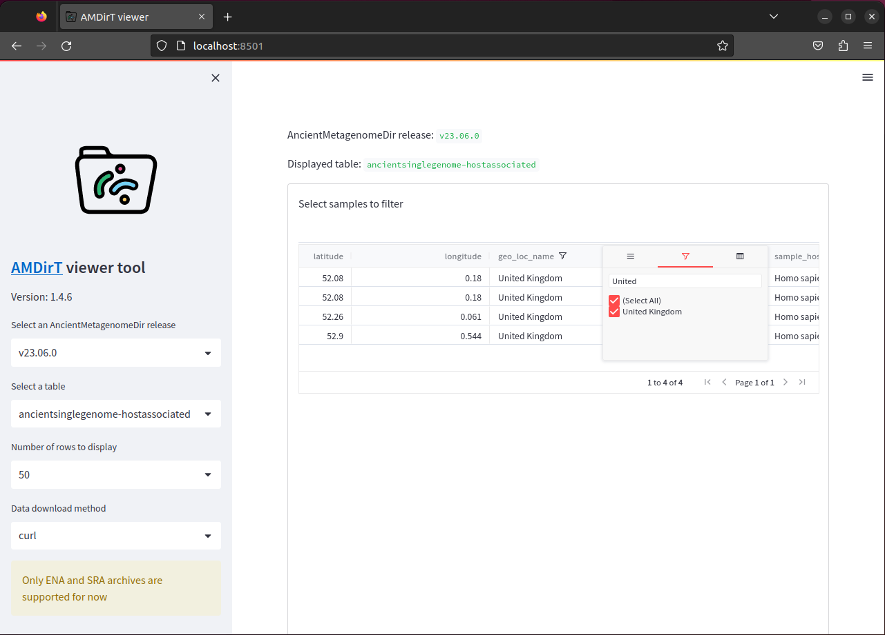
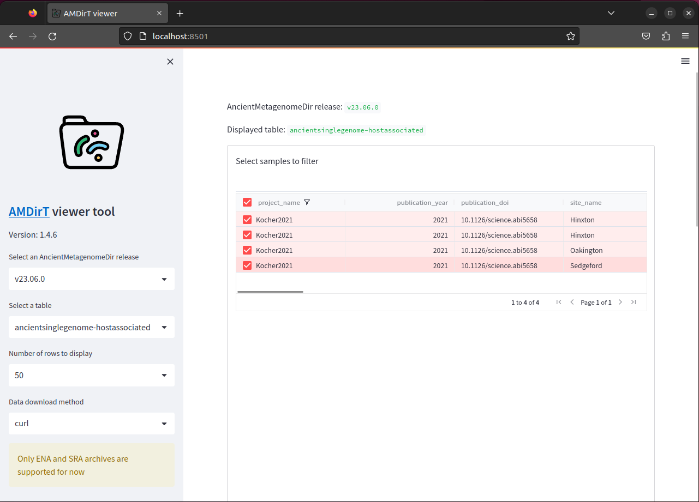
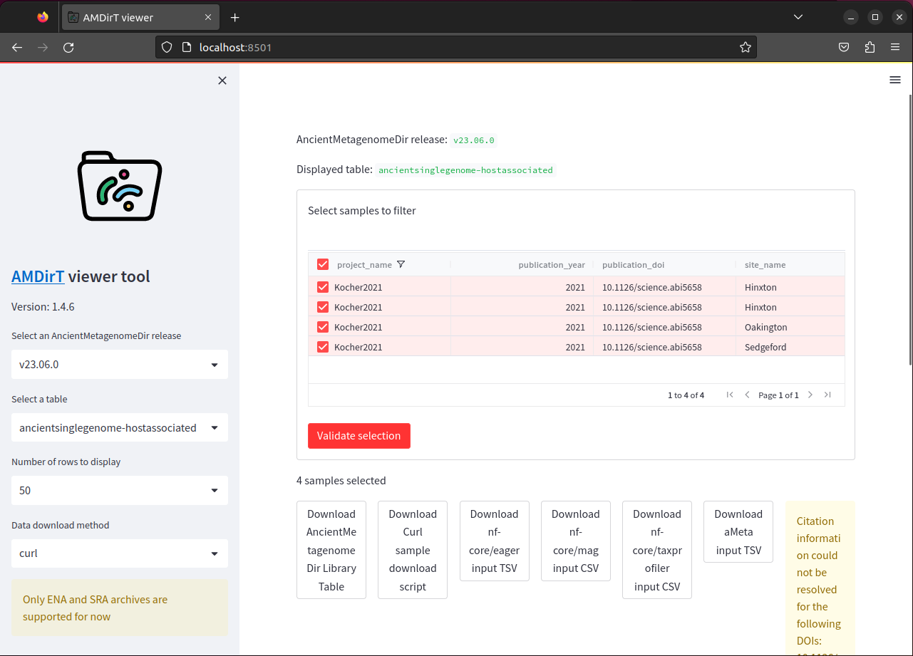
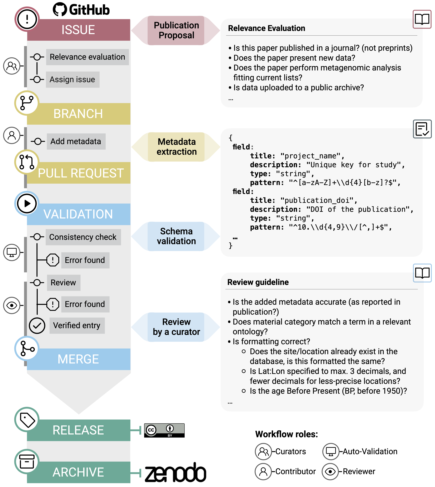
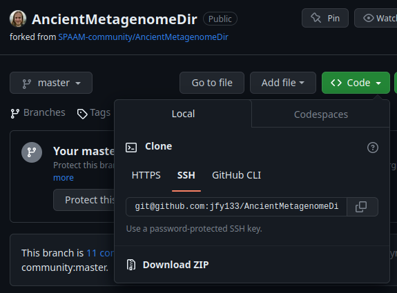

16 Accessing Ancient Metagenomic Data
For this chapter’s exercises, if not already performed, you will need to create the conda environment from the yml file in the following link (right click and save as to download), and once created, activate the environment with:
conda activate accessing-ancientmetagenomic-dataTo download the data for this chapter, please download following archive with, extract the tar, and change into the directory.
For example
wget -O accessing-metagenomic-data.tar.gz https://www.dropbox.com/scl/fi/6yc24aqmjklppw59b03kp/accessing-ancientmetagenomic-data.tar.gz?rlkey=rly8e3xv28p5v0c2aixicdf21&dl=0 -P /<PATH>/<TO>/<SOMEWHERE_TO_STORE>/
tar -xzf accessing-metagenomic-data.tar.gz
cd accessing-metagenomic-data16.1 Introduction
In most bioinformatic projects, we need to include publicly available comparative data to expand or compare our newly generated data with.
Including public data can benefit ancient metagenomic studies in a variety of ways. It can help increase our sample sizes (a common problem when dealing with rare archaeological samples) - thus providing stronger statistical power. Comparison with a range of previously published data of different preservational levels can allow an estimate on the quality of the new samples. When considering solely (re)using public data, we can consider that this can also spawn new ideas, projects, and meta analyses to allow further deeper exploration of ancient metagenomic data (e.g., looking for correlations between various environmental factors and preservation).
Fortunately for us, geneticists and particularly palaeogenomicists have been very good at uploading raw sequencing data to well-established databases (Anagnostou et al. 2015).
In the vast majority of cases you will be able to find publically available sequencing data on the INSDC association of databases, namely the EBI’s European Nucleotide Archive (ENA), and NCBI or DDBJ’s Sequence Read Archives (SRA). However, you may in some cases find ancient metagenomic data on institutional FTP servers, domain specific databases (e.g. OAGR), Zenodo, Figshare, or GitHub.
But while the data is publicly available, we need to ask whether it is ‘FAIR’.
16.2 Finding Ancient Metagenomic Data
FAIR principles were defined by researchers, librarians, and industry in 2016 to improve the quality of data uploads - primarily by making data uploads more ‘machine readable’. FAIR standards for:
- Findable
- Accessible
- Interoperable
- Reproducible
When we consider ancient (meta)genomic data, we are pretty close to this. Sequencing data is in most cases accessible (via the public databases like ENA, SRA), interoperable and reproducible because we use field standard formats such as FASTQ or BAM files. However findable remains an issue.
This is because the metadata about each data file is dispersed over many places, and very often not with the data files themselves.
In this case I am referring to metadata such as: What is the sample’s name? How old is it? Where is it from? Which enzymes were used for library construction? What sequencing machine was this library sequenced on?
To find this information about a given data file, you have to search many places (main text, supplementary information, the database itself), for different types of metadata (as authors report different things), and also in different formats (text, tables, figures.
This very heterogenous landscape makes it difficult for machines to index all this information (if at all), and thus means you cannot search for the data you want to use for your own research in online search engines.
16.3 AncientMetagenomeDir
This is where the SPAAM community project ‘AncientMetagenomeDir’ comes in (Fellows Yates, Andrades Valtueña, et al. 2021). AncientMetagenomeDir is a resource of lists of metadata of all publishing and publicly available ancient metagenomes and microbial genome-level enriched samples and their associated libraries.
By aggregating and standardising metadata and accession codes of ancient metagenomic samples and libraries, the project aims to make it easier for people to find comparative data for their own projects, appropriately re-analyse libraries, as well as help track the field over time and facilitate meta analyses.
Currently the project is split over three main tables: host-associated metagenomes (e.g. ancient microbiomes), host-associated single-genomes (e.g. ancient pathogens), and environmental metagenomes (e.g. lakebed cores or cave sediment sequences).
The repository already contains more than 2000 samples and 5000 libraries, spanning the entire globe and as far back as hundreds of thousands of years.
To make the lists of samples and their metadata as accessible and interoperable as possible, we utilise simple text (TSV - tab separate value) files - files that can be opened by pretty much all spreadsheet tools (e.g., Microsoft Office excel, LibreOffice Calc) and languages (R, Python etc.) (Figure 16.1).

Critically, by standardising the recorded all metadata across all publications this makes it much easier for researchers to filter for particular time periods, geographical regions, or sample types of their interest - and then use the also recorded accession numbers to efficiently download the data.
At their core all different AncientMetagenomeDir tables must have at 6 minimum metadata sets at the sample level:
- Publication information (doi)
- Sample name(s)
- Geographic location (e.g. country, coordinates)
- Age
- Sample type (e.g. bone, sediment, etc.)
- Data Archive and accessions
Each table then has additional columns depending on the context (e.g. what time of microbiome is expected for host-associated metagenomes, or species name of the genome that was reconstructed).
The AncientMetagenomeDir project already has 9 major releases, and will continued to be regularly updated as the community continues to submit new metadata of samples of new publications as they come out.
16.4 AMDirT
But how does one explore such a large dataset of tables with thousands of rows? You could upload this into a spreadsheet tool or in a programming language like R, but you would still have to do a lot of manual filtering and parsing of the dataset to make it useful for downstream analyses.
In response to this The SPAAM Community have also developed a companion tool ‘AMDirT’ to facilitate this. Amongst other functionality, AMDirT allows you to load different releases of AncientMetagenomeDir, filter and explore to specific samples or libraries of interest, and then generate download scripts, configuration files for pipelines, and reference BibTeX files for you, both via a command-line (CLI) or graphical user interface (GUI)!
16.4.1 Running AMDirT viewer
We will now demonstrate how to use the AMDirT graphical user interface to load a dataset, filter to samples of interest, and download some configuration input files for downstream ancient DNA pipelines.
This tutorial will require a web-browser! Make sure to run on your local laptop/PC or, if on on a server, with X11 forwarding activated.
First, we will need to activate a conda environment, and then install the latest development version of the tool for you.
While in the accessing-ancientmetagenomic-data conda environment, run the following command to load the GUI into your web-browser. If the browser doesn’t automatically load, copy the IP address and paste it in your browser’s URL bar.
AMDirT viewerThe first time opening AMDirT (a streamlit app), it may ask you to sign up for a newsletter using your email.
Do not type anything when prompted (i.e., just press enter), this is entirely optional and will not affect the usage of the tool.
You will not be asked again when in the same conda environment.
Your web browser should now load, and you should see a two panel page.
Under Select a table use the dropdown menu to select ‘ancientsinglegenome-hostassociated’.
You should then see a table (Figure 16.3), pretty similar what you are familiar with with spreadsheet tools such as Microsoft Excel or LibreOffice calc.

To navigate, you can scroll down to see more rows, and press shift and scroll to see more columns, or use click on a cell and use your arrow keys (⬆,⬇,⬅,➡) to move around the table.
You can reorder columns by clicking on the column name, and also filter by pressing the little ‘burger’ icon that appears on the column header when you hover over a given column.
As an exercise, we will try filtering to a particular set of samples, then generate some download scripts, and download the files.
First, filter the project_name column to ‘Muhlemann2020’ from (Kocher et al. 2021, Figure 16.4).

Then scroll to the right, and filter the geo_loc_name to ‘Norway’ (Figure 16.5).

You should be left with 2 rows.
Finally, scroll back to the first column and tick the boxes of these four samples (Figure 16.6).

Once you’ve selected the samples you want, you can press Validate selection below the table box. You should then see a series loading-spinner, and new a lot of buttons should appear (Figure 16.7)!

You should have four categories of buttons:
- Download AncientMetagenomeDir Library Table
- Download Curl sample download script
- Download <tool/pipeline name> input TSV
- Download Citations as BibText
The first button is to download a table containing all the AncientMetagenomeDir metadata of the selected samples. The second is for generating a download script that will allow you to immediately download all sequencing data of the samples you selected. The third set of buttons generate (partially!) pre-configured input files for use in dedicated ancient DNA pipeline such as nf-core/eager (Fellows Yates, Lamnidis, et al. 2021), PALAEOMIX (Schubert et al. 2014), and/or and aMeta (Pochon et al. 2022). Finally, the fourth button generates a text file with (in most cases) all the citations of the data you downloaded, in a format accepted by most reference/citation managers. In this case the reference metadata for that particular publication isn’t publicly available so there is a warning.
It’s important to note you are not necessarily restricted to Curl for downloading the data. AMDirT aims to add support for whatever tools or pipelines requested by the community. For example, an already supported downloading tool alternative is the nf-core/fetchNGS pipeline. You can select these using the drop-down menus on the left hand-side.
For the next step of this tutorial, we will press the following buttons:
- Download AncientMetagenomeDir Library Table
- Download Curl sample download script
- Download nf-core/eager input TSV
- Download Citations as BibText
Your browser should then download two .tsv files, one .sh file and one .bib file into it’s default location.
Do not worry if you get a ‘Citation information could not be resolved’ warning! This is occasionally expected for some publications due to a CrossRef metadata information problem when requesting reference information about a DOI.
Once this is done, you can close the tab of the web browser, and in the terminal you can press ctrl + c to shutdown the tool.
16.4.2 Inspecting AMDirT viewer Output
Lets look at the files that AMDirT has generated for you.
First we should mv our files from the directory that your web browser downloaded the files into into somewhere safer.
To start, we make sure we’re still in the chapter’s data directory, and move move the files into it.
mv ~/Downloads/AncientMetagenomeDir_* /<path>/<to>/accessing-ancientmetagenomic-data/The default download directory normally something like ~/Downloads/), however may vary on your machine!
Then we can look inside the chapter’s directory. We should see the following five files
lsAncientMetagenomeDir_bibliography.bib
AncientMetagenomeDir_curl_download_script.sh
AncientMetagenomeDir_filtered_libraries.csv
AncientMetagenomeDir_nf_core_eager_input_table.tsv
ancientsinglegenome-hostassociated_samples_Muhlemann2020_Norway.tsvAMDirT v1.4.6 has a bug where nf-core/mag files will also be generated whenever you download a file
These can be ignored, or deleted with the command rm *_mag_*
We can simply run cat of the four files downloaded by AMDirT to look inside (the files starting with AncientMetagenomeDir_). If you run cat on the curl download script, you should see a series of curl commands with the correct ENA links for you for each of the samples you wish to download.
cat AncientMetagenomeDir_curl_download_script.sh#!/usr/bin/env bash
curl -L ftp://ftp.sra.ebi.ac.uk/vol1/fastq/ERR409/005/ERR4093845/ERR4093845.fastq.gz -o ERR4093845.fastq.gz
curl -L ftp://ftp.sra.ebi.ac.uk/vol1/fastq/ERR409/008/ERR4093838/ERR4093838.fastq.gz -o ERR4093838.fastq.gz
curl -L ftp://ftp.sra.ebi.ac.uk/vol1/fastq/ERR409/000/ERR4093860/ERR4093860_2.fastq.gz -o ERR4093860_2.fastq.gz
curl -L ftp://ftp.sra.ebi.ac.uk/vol1/fastq/ERR409/006/ERR4093846/ERR4093846.fastq.gz -o ERR4093846.fastq.gz
curl -L ftp://ftp.sra.ebi.ac.uk/vol1/fastq/ERR409/009/ERR4093839/ERR4093839.fastq.gz -o ERR4093839.fastq.gz
curl -L ftp://ftp.sra.ebi.ac.uk/vol1/fastq/ERR409/000/ERR4093860/ERR4093860_1.fastq.gz -o ERR4093860_1.fastq.gz
curl -L ftp://ftp.sra.ebi.ac.uk/vol1/fastq/ERR409/007/ERR4093847/ERR4093847.fastq.gz -o ERR4093847.fastq.gzBy providing this script for you, AMDirT facilitates fast download of files of interest by replacing the one-by-one download commands for each sample with a single command!
bash AncientMetagenomeDir_curl_download_script.sh % Total % Received % Xferd Average Speed Time Time Time Current
Dload Upload Total Spent Left Speed
100 4042k 100 4042k 0 0 3925k 0 0:00:01 0:00:01 --:--:-- 3928k
% Total % Received % Xferd Average Speed Time Time Time Current
Dload Upload Total Spent Left Speed
100 7749k 100 7749k 0 0 6487k 0 0:00:01 0:00:01 --:--:-- 6490k
% Total % Received % Xferd Average Speed Time Time Time Current
Dload Upload Total Spent Left Speed
100 980k 100 980k 0 0 1140k 0 --:--:-- --:--:-- --:--:-- 1140k
% Total % Received % Xferd Average Speed Time Time Time Current
Dload Upload Total Spent Left Speed
100 5346k 100 5346k 0 0 4777k 0 0:00:01 0:00:01 --:--:-- 4774k
% Total % Received % Xferd Average Speed Time Time Time Current
Dload Upload Total Spent Left Speed
100 8671k 100 8671k 0 0 6794k 0 0:00:01 0:00:01 --:--:-- 6801k
% Total % Received % Xferd Average Speed Time Time Time Current
Dload Upload Total Spent Left Speed
100 836k 100 836k 0 0 995k 0 --:--:-- --:--:-- --:--:-- 994k
% Total % Received % Xferd Average Speed Time Time Time Current
Dload Upload Total Spent Left Speed
100 2799k 100 2799k 0 0 2816k 0 --:--:-- --:--:-- --:--:-- 2816kRunning this command should result in progress logs of the downloading of the data of the four selected samples!
We can check the output by running ls to verify we have seven FASTQ files (five single end, and one paired end libraries).
Once the four samples are downloaded, AMDirT then facilitates fast processing of the data, as the eager script can be given directly to nf-core/eager as input. Importantly by including the library metadata (mentioned above), researchers can leverage the complex automated processing that nf-core/eager can perform when given such relevant metadata.
cat AncientMetagenomeDir_nf_core_eager_input_table.tsvSample_Name Library_ID Lane Colour_Chemistry SeqType Organism Strandedness UDG_Treatment R1 R2 BAM
VK388 ERR4093838 0 4 SE Homo sapiens double none ERR4093838.fastq.gz NA NA
VK388 ERR4093839 0 4 SE Homo sapiens double none ERR4093839.fastq.gz NA NA
VK515 ERR4093845 0 4 SE Homo sapiens double none ERR4093845.fastq.gz NA NA
VK515 ERR4093846 0 2 SE Homo sapiens double none ERR4093846.fastq.gz NA NA
VK515 ERR4093847 0 4 SE Homo sapiens double none ERR4093847.fastq.gz NA NA
VK515 ERR4093860 0 2 PE Homo sapiens double none ERR4093860_1.fastq.gz ERR4093860_2.fastq.gz NAFinally, we can look into the BibTeX citations file (*bib) which will provide you with the citation information of all the downloaded data and AncientMetagenomeDir itself.
The contents of this file is reliant on indexing of publications on CrossRef. In some cases not all citations will be present (as per the warning), so this should be double checked!
cat AncientMetagenomeDir_bibliography.bib@article{Fellows_Yates_2021,
doi = {10.1038/s41597-021-00816-y},
url = {https://doi.org/10.1038%2Fs41597-021-00816-y},
year = 2021,
month = {jan},
publisher = {Springer Science and Business Media {LLC}},
volume = {8},
number = {1},
author = {James A. Fellows Yates and Aida Andrades Valtue{\~{n}}a and {\AA}shild J. V{\aa}gene and Becky Cribdon and Irina M. Velsko and Maxime Borry and Miriam J. Bravo-Lopez and Antonio Fernandez-Guerra and Eleanor J. Green and Shreya L. Ramachandran and Peter D. Heintzman and Maria A. Spyrou and Alexander Hübner and Abigail S. Gancz and Jessica Hider and Aurora F. Allshouse and Valentina Zaro and Christina Warinner},
title = {Community-curated and standardised metadata of published ancient metagenomic samples with {AncientMetagenomeDir}},
journal = {Scientific Data}
}
@article{M_hlemann_2020,
doi = {10.1126/science.aaw8977},
url = {https://doi.org/10.1126%2Fscience.aaw8977},
year = 2020,
month = {jul},
publisher = {American Association for the Advancement of Science ({AAAS})},
volume = {369},
number = {6502},
author = {Barbara Mühlemann and Lasse Vinner and Ashot Margaryan and Helene Wilhelmson and Constanza de la Fuente Castro and Morten E. Allentoft and Peter de Barros Damgaard and Anders Johannes Hansen and Sofie Holtsmark Nielsen and Lisa Mariann Strand and Jan Bill and Alexandra Buzhilova and Tamara Pushkina and Ceri Falys and Valeri Khartanovich and Vyacheslav Moiseyev and Marie Louise Schjellerup J{\o}rkov and Palle {\O}stergaard S{\o}rensen and Yvonne Magnusson and Ingrid Gustin and Hannes Schroeder and Gerd Sutter and Geoffrey L. Smith and Christian Drosten and Ron A. M. Fouchier and Derek J. Smith and Eske Willerslev and Terry C. Jones and Martin Sikora},
title = {Diverse variola virus (smallpox) strains were widespread in northern Europe in the Viking Age},
journal = {Science}
}This file can be easily loaded into most reference managers and then have all the citations quickly added to your manuscripts.
As in note above sometimes not all citation information can be retrieved using web APIs, so you should always validate all citations of all data you have downloaded are represented.
16.4.3 AMDirT convert
If you’re less of a GUI person and consider yourself a command-line wizard, you can also use the AMDirT convert command instead of the GUI version.
Make a new directory called gui, and change into it
mkdir gui && cd gui/In this case you must supply your own filtered AncientMetagenomeDir samples table, and use command line options to specify which files to generate.
For example, lets say you used R to make the ‘extra’ file in our chapter directory (ancientsinglegenome-hostassociated_samples_Muhlemann2020_Norway.tsv - basically the same Muhlemann2020 et al. samples from Norway, as filtered in the GUI part of this tutorial). You would supply this to AMDirT convert as with the next command.
AMDirT convert -o . --bibliography --librarymetadata --curl --eager ../ancientsinglegenome-hostassociated_samples_Muhlemann2020_Norway.tsv ancientsinglegenome-hostassociatedYou should see a few messages saying Writing <XYZ>, and then if we run ls, you should see the same resulting files as before with the GUI!
lsAncientMetagenomeDir_bibliography.bib
AncientMetagenomeDir_curl_download_script.sh
AncientMetagenomeDir_filtered_libraries.tsv
AncientMetagenomeDir_nf_core_eager_input_table.tsvThe convert command allowed you to say where to save the output files, use different flags to specify which scripts, bib, and configuration files you wish to generate, and finally your filtered AncientMetagenomeDir TSV file and which table it’s derived from.
Therefore the convert command route of AMDirT allows you to include AMDirT in more programmatic workflows to make downloading data more efficiently.
16.5 Git Practise
A critical factor of AncientMetagenomeDir is that it is community-based. The community curates all new submissions to the repository, and this all occurs with Git and GitHub.
The data is hosted and maintained on GitHub - new publications are evaluated on issues, submissions created on branches, made by pull requests, and PRs reviewed by other members of the community.
You can see the workflow in the image below from the AncientMetagenomeDir publication, and read more about the workflow on the AncientMetagenomeDir wiki.

As AncientMetagenomeDir is on GitHub, the means we can also use this repository to try out our Git skills we learnt in the chapter Introduction to Git(Hub)!
Your task is to complete the following steps however with git terms removed (indicated by quotes). You should be able to complete the steps and also note down what the correct Git terminology:
- Make a ‘copy’ the jfy133/AncientMetagenomeDir repository to your account
We are forking a personal fork of the main repository to ensure we don’t accidentally edit the main AncientMetagenomeDir repository!
‘Download’ the ‘copied’ repo to your local machine
‘Change’ to the
devbranchModify the file
ancientsinglegenome-hostassociated_samples.tsv. Add the following line to the end of the TSV. Make sure your text editor doesn’t replace tabs with spaces!Long2022 2022 10.1038/s42003-022-03527-1 Basilica of St. Domenico Maggiore 40.848 14.254 Italy NASD1 Homo sapiens 400 10.1038/s42003-022-03527-1 bacteria Escherichia coli calcified nodule chromosome SRA raw PRJNA810725 SRS12115743‘Send’ back to Git(Hub)
Open a ‘request’ adding the changes to the original
jfy133/AncientMetagenomeDirrepo- Make sure to put ‘Summer school’ in the title of the ‘Request’
- Fork the jfy133/AncientMetagenomeDir repository to your account (Figure 16.9)

Clone the copied repo to your local machine
git clone git@github.com:<YOUR_USERNAME>/AncientMetagenomeDir.Git cd AncientMetagenomeDirSwitch to the
devbranchgit switch devModify
ancientsinglegenome-hostassociated_samples.tsvecho "Long2022 2022 10.1038/s42003-022-03527-1 Basilica of St. Domenico Maggiore 40.848 14.254 Italy NASD1 Homo sapiens 400 10.1038/s42003-022-03527-1 bacteria Escherichia coli calcified nodule chromosome SRA raw PRJNA810725 SRS12115743" >> ancientsinglegenome-hostassociated/samples/ancientsinglegenome-hostassociated_samples.tsvCommit and Push back to your Fork on Git(Hub)
git add ancientsinglegenome-hostassociated/samples/ancientsinglegenome-hostassociated_samples.tsv git commit -m 'Add Long2022' git pushOpen a Pull Request adding changes to the original jfy133/AncientMetagenomeDir repo (Figure 16.10)
- Make sure to make the pull request against
jfy133/AncientMetagenomeDirand NOTSPAAM-community/AncientMetagenomeDir - Make sure to put ‘Summer school’ in the title of the pull request!
- Make sure to make the pull request against

16.6 (Optional) clean-up
Let’s clean up your working directory by removing all the data and output from this chapter.
When closing your jupyter notebook(s), say no to saving any additional files.
Press ctrl + c on your terminal, and type y when requested. Once completed, the command below will remove the /<PATH>/<TO>/accessing-metagenomic-data directory as well as all of its contents.
Always be VERY careful when using rm -r. Check 3x that the path you are specifying is exactly what you want to delete and nothing more before pressing ENTER!
rm -r /<PATH>/<TO>/accessing-metagenomic-dataOnce deleted you can move elsewhere (e.g. cd ~).
We can also get out of the conda environment with
conda deactivate16.7 Summary
- Reporting of metadata messy! Consider when publishing your own work!
- Use AncientMetagenomeDir as a template
- Use AncientMetagenomeDir and AMDirT (beta) to rapidly find public ancient metagenomic data
- Contribute to AncientMetagenomeDir with git
- Community curated!